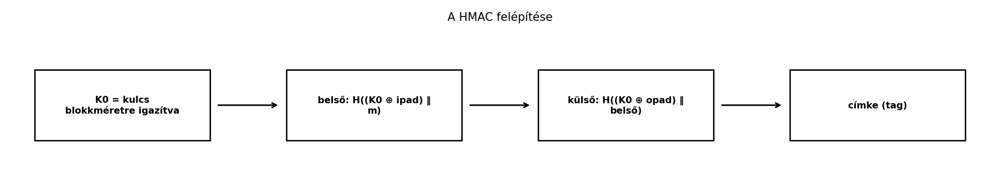

Van egy hitelesítendő üzenetünk, és szeretnénk biztosítani, hogy azt csak az tudja előállítani, aki ismeri a közös kulcsot. A hash-függvény önmagában erre alkalmatlan: a értéket bárki kiszámíthatja, tehát a támadó az üzenethez tartozó lenyomatot hamisíthatja. Az lenne a természetes ötlet, hogy a kulcsot belekeverjük a hash bemenetébe, például vagy módon. A Merkle–Damgård-szerkezetű hash-eknél azonban az ilyen naiv konstrukciók gyakran támadhatók a hosszkiterjesztés segítségével: ha a támadó ismeri a hash értékét egy ismert hosszúságú üzenetre, akkor ki tudja számítani a hash értéket egy meghosszabbított üzenetre anélkül, hogy ismerné a titkos kulcsot. Például a konstrukció esetén a támadó az eredeti értékből és hosszából kiszámíthatja értékét, mert a hash belső állapota éppen a kimenet. A HMAC-ot pontosan azért tervezték, hogy ez a támadás ne működjön, és a konstrukció akkor is biztonságos legyen, ha az alatta lévő hash-függvény Merkle–Damgård-szerkezetű.
A HMAC tehát egy olyan üzenethitelesítő kód, amely hash-függvényből épül fel, és nem igényli a hash-függvény ütközésállóságát – elég, ha a tömörítőfüggvény pszeudorandom függvényként viselkedik. Ezt a tulajdonságot a gyakorlatban széles körben kihasználják: a HMAC nemcsak MAC-ként, hanem kulcsszármaztató függvényként (HKDF), egyszeri jelszavaknál (TOTP) és TLS-kulcsütemezésnél is megjelenik. Ebben az alfejezetben felépítjük a konstrukciót, lépésenként kiszámolunk egy példát, és megvizsgáljuk, miért bízhatunk benne.
A HMAC két hash-számítást végez egymásra építve. Az üzenetet először
egy belső kulcsos rétegbe keverjük, majd a kapott hash-értéket egy külső
kulcsos rétegbe. A két réteg különböző padding-konstansokat használ: a
belső réteg az ipad (inner padding) értéket, a külső az
opad (outer padding) értéket. A lépéseket az alábbi ábra
mutatja.

A lépések számszerűen is értelmezhetők: ha a hash-függvény SHA-256,
akkor a blokkméret
bájt, az ipad minden bájtja 0x36, az
opad minden bájtja 0x5c. A belső réteg
kimenete egy 32 bájtos hash-érték, amelyet ezután a külső réteg
bemeneteként használunk.
Definíció (HMAC, RFC 2104). Legyen egy olyan hash-függvény, amely bájtos blokkokban dolgozik, és legyen a hitelesítéshez használt kulcs. Definiáljuk -t a következőképpen:
Jelölje
azt a
hosszúságú bájtsorozatot, amelynek minden bájtja 0x36, és
azt, amelynek minden bájtja 0x5c. Ekkor
A jel az összefűzést, a a bájtonkénti XOR-t jelöli. A belső hash-t gyakran „inner”, a külsőt „outer” néven emlegetik.
Megjegyzés. Az ipad és
opad értékeit úgy választották, hogy nagy Hamming-távolság
legyen közöttük: 0x36 és 0x5c binárisan
00110110 és 01011100, így minden bájtban négy
bit különbözik. Ez a belső és külső kulcsos réteget jól
szétválasztja.
A HMAC definíciójában a kulcsot mindig
hosszúságúra igazítjuk. Ha a kulcs rövidebb, mint
,
akkor nullabájtokkal töltjük fel; ha hosszabb, akkor hash-eljük. A
0x00 bájtokkal való feltöltés nem csökkenti a biztonságot,
mert a kulcs entrópiája megmarad, és a padding csak a blokkhatárig
tart.
A gyakorlatban a kulcsot általában egy kulcsszármaztató függvény (KDF) kimeneteként, vagy biztonságos véletlenszám-generátorral állítják elő. Ha a kulcs hosszabb, mint a hash kimenete, akkor a hash-elés elveszítheti az entrópiát, ezért érdemes a kulcsot legfeljebb a hash kimenetének hosszára választani.
Vegyük az RFC 4231 egyik tesztvektorát: a kulcs 20 bájt, mindegyik
értéke 0x0b; az üzenet a Hi There szöveg; a
hash-függvény SHA-256. A várt HMAC-érték:
b0344c61d8db38535ca8afceaf0bf12b881dc200c9833da726e9376c2e32cff7Nézzük a lépéseket.
0b0b0b0b0b0b0b0b0b0b0b0b0b0b0b0b0b0b0b0b 00 00 ... 000x36-tal. Az első 20 bájt
0x0b ⊕ 0x36 = 0x3d, a maradék 44 bájt
0x00 ⊕ 0x36 = 0x36. Tehát a belső kulcsos blokk:3d3d...3d (20 bájt) 36 36 ... 36 (44 bájt)Hi There), és kiszámítjuk a SHA-256-ot:Ennek hexadecimális értéke:
92ab4d9a1f3b6152bca9dd9e69af43f4ce99e42fd4e30ff972c48025b9f9cfef(Ez az érték a Python-kódban a inner változóból
kiírható; helyben, Python 3.14.4 hashlib modullal
számolva.)
Külső padding XOR. A
minden bájtját XOR-oljuk 0x5c-vel. Az első 20 bájt
0x0b ⊕ 0x5c = 0x57, a maradék 44 bájt
0x00 ⊕ 0x5c = 0x5c.
Külső hash. Összefűzzük ezt a blokkot a belső hash 32 bájtos értékével, és kiszámítjuk a SHA-256-ot:
Az eredmény az ismert b0344c61...cff7 érték.
A példa mutatja, hogy a két réteg miatt a hosszkiterjesztéses támadó nem tudja a belső hash értéket felhasználni arra, hogy a külső hash-t kiterjessze: a külső réteg bemenete a belső hash kimenete, amelyet a támadó nem ismer, és a külső padding újra kulcsfüggő.
A HMAC biztonsági érvelése a tömörítőfüggvény pszeudorandom tulajdonságán alapul. A pontos bizonyítás (Bellare, Canetti és Krawczyk eredménye) az NMAC nevű köztes konstrukción keresztül halad, amely a belső és külső réteget külön kulcsokkal valósítja meg, majd megmutatja, hogy a HMAC ezt a két kulcsot a hash-függvény segítségével egyetlen kulcsból származtatja. Ezt a teljes bizonyítást itt nem végezzük el, de a vázlat a következő.
Bizonyítási terv (vázlat). Tegyük fel, hogy a hash-függvény tömörítőfüggvénye PRF: adott rejtett kulcs mellett a kimenete megkülönböztethetetlen egy véletlen függvény kimenetétől. Ekkor:
A belső hash első tömörítése a blokkot dolgozza fel; az eredmény, , a támadó számára ismeretlen, kulcsfüggő láncváltozó, és a további blokkok ebből indulnak – ez pontosan az NMAC belső kulcsa. A belső hash kimenete tehát pszeudorandom.
A külső réteg ezt a pszeudorandom értéket használja bemenetként egy újabb PRF-híváshoz, amelynek kulcsa . Mivel a belső kimenet pszeudorandom, a külső réteg is PRF-ként viselkedik. A bizonyítás a két származtatott kulcs (, ) függetlenségét is feltételezi (kapcsolt kulcsú PRF-feltevés).
A két réteg szétválasztása azért fontos, mert ha a hash-függvény Merkle–Damgård-szerkezetű, a naiv vagy konstrukciók hosszkiterjesztéssel támadhatók. A HMAC belső hash-ének kimenete el van rejtve a támadó elől, így a hosszkiterjesztéshez szükséges belső állapot nem ismert.
A fenti érvelésből következik, hogy a HMAC akkor is biztonságos lehet, ha a hash-függvény ütközésállósága sérül, feltéve, hogy a tömörítőfüggvény PRF marad. Ez a gyakorlatban fontos: például az MD5 ütközésállósága régóta sérült, de a HMAC-MD5 konstrukció sokáig nem volt közvetlenül feltörve, mert a támadások az ütközéskeresésre épültek. Ennek ellenére ma már a HMAC-MD5 használata kerülendő, mert a hash-függvény gyengeségei hosszú távon kockázatot jelentenek.
Továbbvitt eredmény. A HMAC mint PRF tulajdonságát használjuk a Kulcsszármaztatás: HKDF alfejezetben, ahol a HMAC az extract-then-expand szerkezet alapja; a Egyszeri jelszavak, FIDO2 és WebAuthn alfejezetben a TOTP időalapú egyszeri jelszavak HMAC-ot használnak; a Kerberos, OAuth és JWT kriptográfiai buktatói alfejezetben a JWT HS256 aláírása HMAC-SHA256; végül a A TLS 1.3 kulcsütemezése, munkamenet-folytatás és 0-RTT alfejezetben a TLS 1.3 kulcsütemezés is HMAC-alapú HKDF-re épül.
Az alábbi kód egy oktatási célú, nem éles használatra szánt kézi
HMAC-SHA256 implementációt mutat, majd összehasonlítja a Python standard
könyvtárának hmac moduljával. A kód első sora megjegyzés,
ahogy a könyvben minden oktatási implementációnál.
# OKTATÁSI CÉLRA – NEM ÉLES HASZNÁLATRA
import hashlib, hmac
def hmac_sha256_manual(key: bytes, msg: bytes) -> bytes:
B = 64 # SHA-256 blokkméret bájtban
if len(key) > B:
key = hashlib.sha256(key).digest()
key = key.ljust(B, b'\x00')
ipad = bytes([0x36] * B)
opad = bytes([0x5c] * B)
inner = hashlib.sha256(
bytes([kb ^ ib for kb, ib in zip(key, ipad)]) + msg
).digest()
outer = hashlib.sha256(
bytes([kb ^ ob for kb, ob in zip(key, opad)]) + inner
).digest()
return outer
key = b'key'
msg = b'The quick brown fox jumps over the lazy dog'
manual = hmac_sha256_manual(key, msg)
library = hmac.new(key, msg, hashlib.sha256).digest()
print(manual.hex())
print(library.hex())
print(manual == library)A várt kimenet: a két hexadecimális karakterlánc megegyezik, és a kód
True-t ír ki. A hexadecimális érték hossza 64 karakter,
mert a SHA-256 kimenete 32 bájt. A hmac.new függvény a
standard könyvtárban ugyanezt a számítást végzi, így a kézi
implementáció helyességét ellenőrizhetjük.
Figyelem. A fenti kézi implementáció nem alkalmas
éles használatra, mert nem biztosít konstans idejű összehasonlítást és a
kulcskezelés sem védett oldalcsatornák ellen. Éles környezetben mindig a
bevált hmac modult használjuk.
A HMAC az egyik leggyakrabban használt kriptográfiai primitív a webes hitelesítésben és a felhőszolgáltatások API-hitelesítésében.
JWT HS256. A JSON Web Token (JWT) egy kompakt,
URL-biztonságos token, amely három részből áll: fejléc (header), törzs
(payload) és aláírás. A HS256 algoritmus esetén az aláírást
HMAC-SHA256-tal számítják ki a fejléc és a törzs base64url-kódolt,
ponttal összefűzött stringje felett, a titkos kulccsal. A token
integritását és hitelességét a HMAC garantálja: aki nem ismeri a
kulcsot, nem tud érvényes aláírást készíteni. A Kerberos, OAuth és JWT kriptográfiai buktatói
alfejezetben látni fogjuk, hogy milyen hibákhoz vezet, ha a HMAC kulcsot
nem megfelelően kezelik (például alg-keveredés vagy gyenge
kulcs).
AWS Signature V4. Az Amazon Web Services
API-kéréseinek hitelesítésére használt Signature Version 4 (SigV4)
eljárás HMAC-láncot alkalmaz. A titkos hozzáférési kulcsból kiindulva
először HMAC-SHA256-tal kiszámítják a dátumhoz tartozó kulcsot, majd a
régióhoz, a szolgáltatáshoz, és végül egy aws4_request
konstanshoz tartozó kulcsot. Ezután a kérés kanonikus formáját
(HTTP-módszer, URI, query paraméterek, fejlécek, a törzs hash-e)
HMAC-SHA256-tal aláírják. A HMAC itt két szerepet is betölt:
kulcsszármaztatás (a lépcsőzetes kulcsok előállítása) és MAC (az aláírás
elkészítése). Ez a konstrukció jól szemlélteti a HMAC mint PRF
tulajdonságot, mert a köztes kulcsok pszeudorandom értékek, amelyeket a
következő lépés kulcsaként használnak.
Hash használata MAC helyett. Az vagy akár nem biztonságos hitelesítés. Az előbbit bárki kiszámíthatja, az utóbbit pedig hosszkiterjesztéses támadás törheti, ha a hash Merkle–Damgård-szerkezetű. Mindig HMAC-ot használjunk, ha hash-alapú MAC-re van szükség.
Nem konstans idejű összehasonlítás. A MAC-címke
ellenőrzésénél sokan a == operátort használják, amely
rövidre zárja a bájtok összehasonlítását, és időzítéses támadást tesz
lehetővé. Pythonban a hmac.compare_digest(a, b) függvényt
kell használni, amely konstans időben fut.
Gyenge kulcs vagy jelszó közvetlen használata. A HMAC kulcsának elegendő entrópiájú, véletlenszerű bájtokból kell állnia. Ha felhasználói jelszóból származtatjuk, akkor előbb jelszó-alapú, szándékosan lassú és sózott KDF-et (Argon2id, scrypt vagy PBKDF2 – lásd a Memóriaigényes jelszó-hash: scrypt és Argon2 alfejezetet) kell alkalmazni; a HKDF erre nem alkalmas, mert nem lassítja a próbálgatást, így a támadó brute-force támadást indíthat.
A HMAC kimenetének túlzott csonkítása. Bár a HMAC kimenete csonkolható, a csonkolt címke hosszát a kívánt biztonsági szinthez kell igazítani. Például 128 bites biztonsághoz legalább 128 bitet (16 bájtot) kell megtartani. A túl rövid címke találgatással hamisítható: bites címkénél minden ellenőrzési próbálkozás eséllyel sikeres, ezért a címkehosszt az ellenőrzések megengedett számához is igazítani kell (pl. 64 bit csak korlátozott próbaszám mellett).
A HMAC-ot titkosításra használni. A HMAC nem titkosít, és nem is alkalmas üzenetek rejtésére. Ha az üzenet tartalmát titkosítani kell, akkor hitelesített titkosítást (AEAD) kell használni, amely a titkosítást és a MAC-et együtt kezeli.
ipad és opad értéke SHA-256 esetén,
és mi a szerepük?A válaszok a Megoldások szakasz elején, az „Önellenőrzés – válaszok” alatt találhatók.
1. feladat (A). Számítsd ki a
és
első 4 bájtját hexadecimálisan, ha a kulcs 4 bájt:
0x0b 0x0b 0x0b 0x0b, és a hash SHA-256.
2. feladat (A). Mi a különbség a hash-függvény és a MAC között? Miért nem elég a konstrukció hitelesítésre?
3. feladat (B). Írj Python-kódot, amely a
hmac modul segítségével kiszámítja a HMAC-SHA256 értéket az
RFC 4231 tesztvektorhoz (kulcs: 20 bájt 0x0b, üzenet:
Hi There), és ellenőrzi, hogy az eredmény megegyezik a fent
megadott b0344c61...cff7 értékkel.
4. feladat (B). Egy szerver HMAC-SHA256-tal
hitelesíti az üzeneteket, de a címke ellenőrzésére a ==
operátort használja. Ismertesd egy időzítéses támadás lépéseit, és írd
le a helyes védekezést.
5. feladat (C). Vázold a HMAC biztonsági bizonyításának fő lépését: miért következik a HMAC PRF-tulajdonsága a tömörítőfüggvény PRF-tulajdonságából? Miért van szükség a két különböző padding-konstansra?
6. feladat (D). Egy játékalkalmazás a következő naiv MAC-et használja: , ahol egy 32 bájtos kulcs, és a hash SHA-256. A támadó ismeri a értéket egy ismert üzenetre, de nem ismeri -t. Mutasd meg, hogyan tud a támadó hamisítani egy érvényes MAC-et egy meghosszabbított üzenetre anélkül, hogy ismerné a kulcsot. (A játékimplementáció elleni támadás, ne valós rendszer ellen.)
Önellenőrzés – válaszok
ipad = 0x36 minden bájtban,
opad = 0x5c minden bájtban; a belső és külső
réteg kulcsos paddingjét adják, és nagy Hamming-távolságuk szétválasztja
a két réteget.hmac.compare_digest(a, b).Feladatok – megoldások
1. feladat megoldása.
A kulcs 4 bájt, ezért
a kulcs 60 nullabájttal kiegészítve. Az első 4 bájt mindkét paddinggel
való XOR után:
ipad (0x36): 0x0b ⊕ 0x36 = 0x3d, tehát az
első 4 bájt 3d3d3d3d.opad (0x5c): 0x0b ⊕ 0x5c = 0x57, tehát az
első 4 bájt 57575757.A maradék 60 bájt a paddingnak megfelelően 36 vagy
5c.
2. feladat megoldása.
A hash-függvény kulcs nélküli, bárki kiszámíthatja, tehát nem biztosít
hitelességet. A MAC kulcsos, csak a kulcs birtokosa tudja előállítani. A
konstrukció hosszkiterjesztéses támadással hamisítható: ha a támadó
ismeri a hash értéket és az üzenet hosszát, akkor kiszámíthatja
értékét, mert a hash belső állapota a kimenet. A HMAC ezt a támadást a
belső hash elrejtésével akadályozza meg.
3. feladat megoldása.
A Python-kód:
import hmac, hashlib
key = bytes([0x0b] * 20)
msg = b"Hi There"
expected = "b0344c61d8db38535ca8afceaf0bf12b881dc200c9833da726e9376c2e32cff7"
result = hmac.new(key, msg, hashlib.sha256).hexdigest()
print(result)
print(result == expected)A várt kimenet: a megadott hex érték, majd True.
4. feladat megoldása.
Az időzítéses támadás lépései: a támadó sok, különböző első bájtú címkét
küld, és méri a szerver válaszidejét. A == összehasonlítás
bájtonként halad, és az első eltérő bájtnál megáll, így a válaszidő
elárulja, hány bájt egyezik. A támadó bájtonként kitalálja a helyes
címkét. Védekezés: konstans idejű összehasonlítás, például
hmac.compare_digest; a címkét teljes hosszában össze kell
hasonlítani, és a futásidő nem függhet a bájtok értékétől.
5. feladat megoldása.
A vázlat: tegyük fel, hogy a tömörítőfüggvény PRF. A belső réteg első
tömörítése a
blokkot dolgozza fel, az eredmény
kulcsfüggő láncváltozó, így a belső kimenet PRF az üzenetre nézve. A
külső réteg a
kulccsal egy újabb PRF-hívás, amelynek bemenete a belső pszeudorandom
kimenet. A két réteg szétválasztása azért fontos, mert ha ugyanazt a
kulcsos paddinget használnánk, akkor a belső és külső réteg
összemosódhatna, és a hosszkiterjesztéshez hasonló támadások válhatnának
lehetővé. A két különböző konstans garantálja, hogy a belső és külső
réteg független kulcsos állapotot kap.
6. feladat megoldása.
A támadó ismeri
értékét. Mivel a hash Merkle–Damgård-szerkezetű, a kimenet a belső
állapot. A támadó a hash belső állapotát beállítja
-ra,
és folytatja a hash-számítást egy tetszőleges
üzenetrésszel; így kiszámítja
értékét, ahol a padding a hash hosszkódolása. Ez az érték
egy érvényes MAC a
üzenetre, pedig a támadó nem ismeri
-t.
A hosszkiterjesztés ellen a HMAC véd.
A HMAC egy hash-alapú üzenethitelesítő kód, amelyet az RFC 2104 definiál. Képlete:
ahol
a kulcs blokkméretre igazított változata, ipad =
0x36, opad = 0x5c. A konstrukció
két réteggel véd a hosszkiterjesztéses támadások ellen, és biztonsága a
tömörítőfüggvény PRF-tulajdonságára épül. A HMAC PRF-ként is
használható, ezért alapja a HKDF-nek, a TOTP-nek, a JWT HS256-nak és a
TLS 1.3 kulcsütemezésének. A gyakorlatban mindig a szabványos
hmac modult és a compare_digest
összehasonlítást használjuk, és a kulcsot megfelelő entrópiával, KDF-ből
származtatva állítjuk elő. A naiv
konstrukció nem biztonságos, mert hosszkiterjesztéssel hamisítható.
hmac és hashlib modulok
dokumentációja – a kódpéldák API-ja.A fenti források URL-jeit a kiindulópontok tartalmazzák; a szabványszámokat és a tesztvektor értékeit a stabil tudás alapján közöltem, de a pontos szabványszakasz-számokat nem állítottam. Az AWS Signature V4 és a JWT HS256 részletei a vonatkozó specifikációkból származnak; azok aktuális paramétereit a felhasználás előtt ellenőrizni kell.